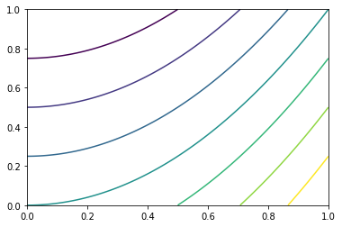
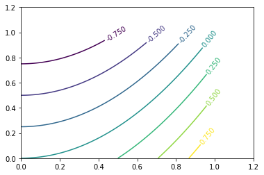
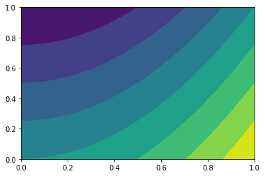

Contour plots
Contour plots allow us to project a third dimension of data down onto an X, Y axis, be it a functional relationship between two dimensions of data or some decision threshold of a given model.
But before we can start plotting this third dimension of data, we have to figure out how to calculate it.
Meshgrid
Say we’ve got two simple vectors, x and y.
%pylab inline
x = np.linspace(0, 10, 5)
y = np.linspace(0, 1, 4)Populating the interactive namespace from numpy and matplotlib
x has length 5 and y has length 4
print(x)
print(x.shape)
print(y)
print(y.shape)[ 0. 2.5 5. 7.5 10. ]
(5,)
[ 0. 0.33333333 0.66666667 1. ]
(4,)
We want to calculate a value for a third vector z ** at every point these two meet**, therefore, we need to express z with dimensions (len(x), len(y)).
This is where meshgrid() comes in.
xx, yy = np.meshgrid(x, y)It produces a matrix xx where our original vector x is broadcast as each row, with the same number of rows as y has length.
print(xx)
print(xx.shape)[[ 0. 2.5 5. 7.5 10. ]
[ 0. 2.5 5. 7.5 10. ]
[ 0. 2.5 5. 7.5 10. ]
[ 0. 2.5 5. 7.5 10. ]]
(4, 5)
Similarly, yy has each column as y vectors, with as many columns as there are x values.
print(yy)
print(yy.shape)[[ 0. 0. 0. 0. 0. ]
[ 0.33333333 0.33333333 0.33333333 0.33333333 0.33333333]
[ 0.66666667 0.66666667 0.66666667 0.66666667 0.66666667]
[ 1. 1. 1. 1. 1. ]]
(4, 5)
Now because we have two matricies of the same dimensions, we can do element-wise calculations and preserve our dimensions.
z = xx + yy
z.shape(4, 5)
z = xx ** yy
z.shape(4, 5)
z = xx > yy
z.shape(4, 5)
Contour
Now that we know how to get clean values for Z, generating a contour plot is a simple call to plt.contour()
X = np.linspace(0, 1, 1000)
Y = np.linspace(0, 1, 1000)
xx, yy = np.meshgrid(X, Y)
Z = xx ** 2 - yy Ez pz
plt.contour(X, Y, Z)<matplotlib.contour.QuadContourSet at 0x1f8bf254eb8>

Labelling Lines
Labelling the contours is also pretty simple. You may have noticed that the call to contour() returned a matplotlib.contour.QuadContourSet object. If we catch this, we can pass it as an argument to ax.clabel()
fig, ax = plt.subplots()
cs = ax.contour(X, Y, Z)
ax.clabel(cs)
# adjusting axis because my X, Y were
# pooly-chosen, lol
ax.set_xlim(0, 1.2)
ax.set_ylim(0, 1.2)(0, 1.2)

Filled Contour
Filling in the contours is just as simple– merely tacking an f onto the function name!
plt.contourf(X, Y, Z)<matplotlib.contour.QuadContourSet at 0x1f8bf5f36d8>
